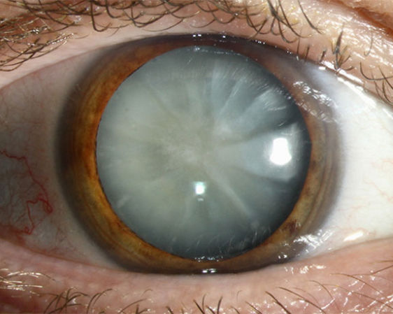
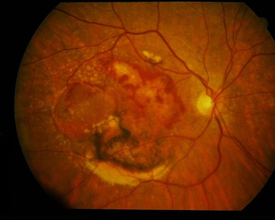
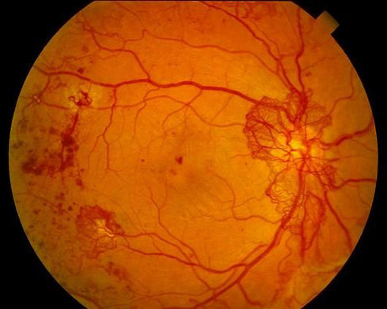

Glaukom (zelený zákal)
je onemocnění které způsobuje neuropatii zrakového nervu a vede k nevrátnému poškození zrakových funkcí. Vice...

Katarakta (šedý zákal)
Při šedém zákalu dochází ke zhoršení vidění vlivem zakalení čočky, kdy postižený vidí zamlženě. Vice...

Věkem podmínená makulární degenerace
je onemocnění, které je nejčastější příčinou slepoty
v rozvinutých zemích u lidí starších 55 let. Vice...

Diabetická retinopatie
vzniká jako důsledek celkového postižení cév u pacientů s cukrovkou (diabetes mellitus). Vice...